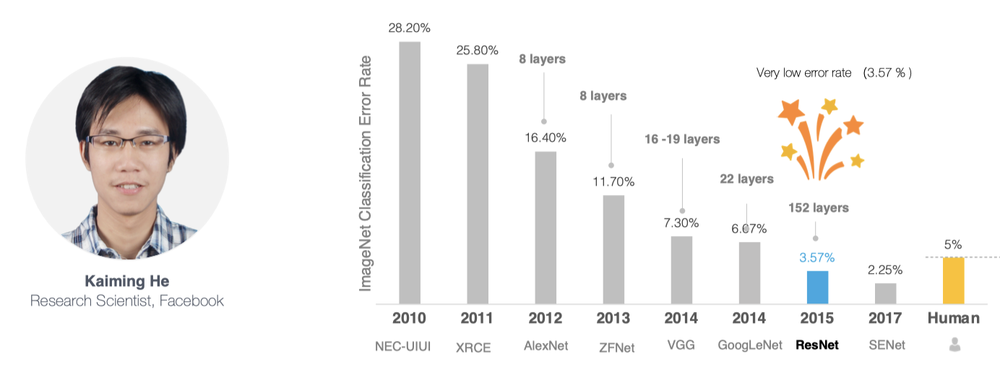
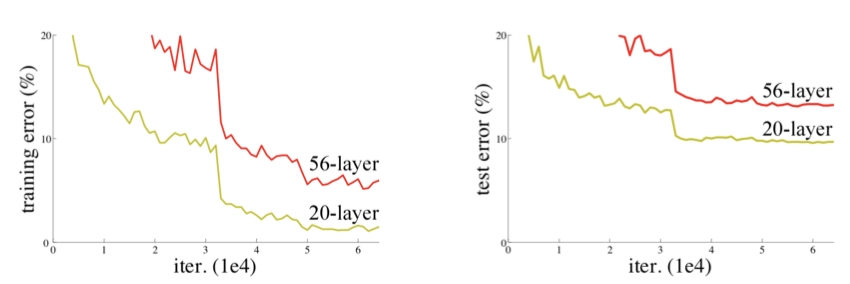
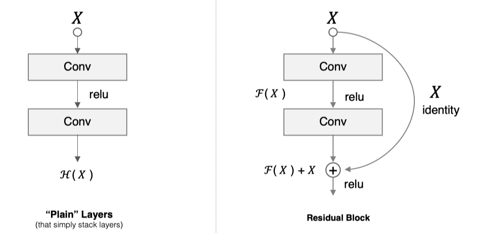
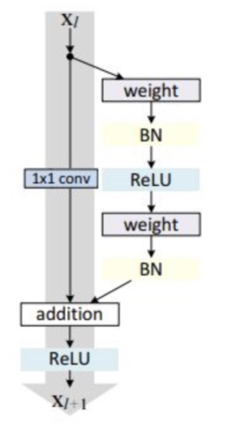
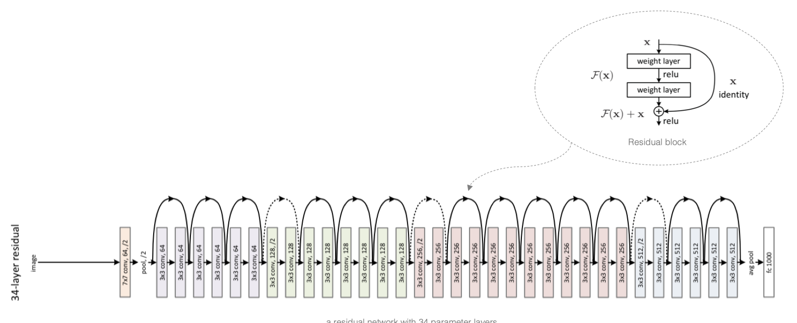

4.5 ResNet
学习目标
- 知道ResNet网络结构的特点
- 能够利用ResNet完成图像分类

网络越深，获取的信息就越多，特征也越丰富。但是在实践中，随着网络的加深，优化效果反而越差，测试数据和训练数据的准确率反而降低了。

针对这一问题，何恺明等人提出了残差网络（ResNet）在2015年的ImageNet图像识别挑战赛夺魁，并深刻影响了后来的深度神经网络的设计。
1 残差块
假设 F(x) 代表某个只包含有两层的映射函数， x 是输入， F(x)是输出。假设他们具有相同的维度。在训练的过程中我们希望能够通过修改网络中的 w和b去拟合一个理想的 H(x)(从输入到输出的一个理想的映射函数)。也就是我们的目标是修改F(x) 中的 w和b 来逼近 H(x) 。如果我们改变思路，用F(x) 来逼近 H(x)-x ，那么我们最终得到的输出就变为 F(x)+x（这里的加指的是对应位置上的元素相加，也就是element-wise addition），这里将直接从输入连接到输出的结构也称为shortcut，那整个结构就是残差块，ResNet的基础模块。

ResNet沿用了VGG全 卷积层的设计。残差块里首先有2个有相同输出通道数的 卷积层。每个卷积层后接BN层和ReLU激活函数，然后将输入直接加在最后的ReLU激活函数前，这种结构用于层数较少的神经网络中，比如ResNet34。若输入通道数比较多，就需要引入 卷积层来调整输入的通道数，这种结构也叫作瓶颈模块，通常用于网络层数较多的结构中。如下图所示：

上图左中的残差块的实现如下，可以设定输出通道数，是否使用1*1的卷积及卷积层的步幅。

# 导入相关的工具包
import tensorflow as tf
from tensorflow.keras import layers, activations
# 定义ResNet的残差块
class Residual(tf.keras.Model):
# 指明残差块的通道数，是否使用1*1卷积，步长
def __init__(self, num_channels, use_1x1conv=False, strides=1):
super(Residual, self).__init__()
# 卷积层：指明卷积核个数，padding,卷积核大小，步长
self.conv1 = layers.Conv2D(num_channels,
padding='same',
kernel_size=3,
strides=strides)
# 卷积层：指明卷积核个数，padding,卷积核大小，步长
self.conv2 = layers.Conv2D(num_channels, kernel_size=3, padding='same')
if use_1x1conv:
self.conv3 = layers.Conv2D(num_channels,
kernel_size=1,
strides=strides)
else:
self.conv3 = None
# 指明BN层
self.bn1 = layers.BatchNormalization()
self.bn2 = layers.BatchNormalization()
# 定义前向传播过程
def call(self, X):
# 卷积，BN，激活
Y = activations.relu(self.bn1(self.conv1(X)))
# 卷积，BN
Y = self.bn2(self.conv2(Y))
# 对输入数据进行1*1卷积保证通道数相同
if self.conv3:
X = self.conv3(X)
# 返回与输入相加后激活的结果
return activations.relu(Y + X)
1*1卷积用来调整通道数。
2 ResNet模型
ResNet模型的构成如下图所示：

ResNet网络中按照残差块的通道数分为不同的模块。第一个模块前使用了步幅为2的最大池化层，所以无须再次减小高和宽。之后的每个模块在第一个残差块里将上一个模块的通道数翻倍，并将高和宽减半。
下面我们来实现这些模块。注意，这里对第一个模块做了特别处理。
# ResNet网络中模块的构成
class ResnetBlock(tf.keras.layers.Layer):
# 网络层的定义：输出通道数（卷积核个数），模块中包含的残差块个数，是否为第一个模块
def __init__(self,num_channels, num_residuals, first_block=False):
super(ResnetBlock, self).__init__()
# 模块中的网络层
self.listLayers=[]
# 遍历模块中所有的层
for i in range(num_residuals):
# 若为第一个残差块并且不是第一个模块，则使用1*1卷积，步长为2（目的是减小特征图，并增大通道数）
if i == 0 and not first_block:
self.listLayers.append(Residual(num_channels, use_1x1conv=True, strides=2))
# 否则不使用1*1卷积，步长为1
else:
self.listLayers.append(Residual(num_channels))
# 定义前向传播过程
def call(self, X):
# 所有层依次向前传播即可
for layer in self.listLayers.layers:
X = layer(X)
return X
ResNet的前两层跟之前介绍的GoogLeNet中的一样：在输出通道数为64、步幅为2的$7\times 7$卷积层后接步幅为2的$3\times 3$的最大池化层。不同之处在于ResNet每个卷积层后增加了BN层,接着是所有残差模块，最后，与GoogLeNet一样，加入全局平均池化层（GAP）后接上全连接层输出。
# 构建ResNet网络
class ResNet(tf.keras.Model):
# 初始化：指定每个模块中的残差快的个数
def __init__(self,num_blocks):
super(ResNet, self).__init__()
# 输入层：7*7卷积，步长为2
self.conv=layers.Conv2D(64, kernel_size=7, strides=2, padding='same')
# BN层
self.bn=layers.BatchNormalization()
# 激活层
self.relu=layers.Activation('relu')
# 最大池化层
self.mp=layers.MaxPool2D(pool_size=3, strides=2, padding='same')
# 第一个block，通道数为64
self.resnet_block1=ResnetBlock(64,num_blocks[0], first_block=True)
# 第二个block，通道数为128
self.resnet_block2=ResnetBlock(128,num_blocks[1])
# 第三个block，通道数为256
self.resnet_block3=ResnetBlock(256,num_blocks[2])
# 第四个block，通道数为512
self.resnet_block4=ResnetBlock(512,num_blocks[3])
# 全局平均池化
self.gap=layers.GlobalAvgPool2D()
# 全连接层：分类
self.fc=layers.Dense(units=10,activation=tf.keras.activations.softmax)
# 前向传播过程
def call(self, x):
# 卷积
x=self.conv(x)
# BN
x=self.bn(x)
# 激活
x=self.relu(x)
# 最大池化
x=self.mp(x)
# 残差模块
x=self.resnet_block1(x)
x=self.resnet_block2(x)
x=self.resnet_block3(x)
x=self.resnet_block4(x)
# 全局平均池化
x=self.gap(x)
# 全链接层
x=self.fc(x)
return x
# 模型实例化：指定每个block中的残差块个数
mynet=ResNet([2,2,2,2])
这里每个模块里有4个卷积层（不计算 1×1卷积层），加上最开始的卷积层和最后的全连接层，共计18层。这个模型被称为ResNet-18。通过配置不同的通道数和模块里的残差块数可以得到不同的ResNet模型，例如更深的含152层的ResNet-152。虽然ResNet的主体架构跟GoogLeNet的类似，但ResNet结构更简单，修改也更方便。这些因素都导致了ResNet迅速被广泛使用。 在训练ResNet之前，我们来观察一下输入形状在ResNe的架构：
X = tf.random.uniform(shape=(1, 224, 224 , 1))
y = mynet(X)
mynet.summary()
Model: "res_net"
_________________________________________________________________
Layer (type) Output Shape Param #
=================================================================
conv2d_2 (Conv2D) multiple 3200
_________________________________________________________________
batch_normalization_2 (Batch multiple 256
_________________________________________________________________
activation (Activation) multiple 0
_________________________________________________________________
max_pooling2d (MaxPooling2D) multiple 0
_________________________________________________________________
resnet_block (ResnetBlock) multiple 148736
_________________________________________________________________
resnet_block_1 (ResnetBlock) multiple 526976
_________________________________________________________________
resnet_block_2 (ResnetBlock) multiple 2102528
_________________________________________________________________
resnet_block_3 (ResnetBlock) multiple 8399360
_________________________________________________________________
global_average_pooling2d (Gl multiple 0
_________________________________________________________________
dense (Dense) multiple 5130
=================================================================
Total params: 11,186,186
Trainable params: 11,178,378
Non-trainable params: 7,808
_________________________________________________________________
2.手写数字势识别
因为ImageNet数据集较大训练时间较长，我们仍用前面的MNIST数据集来演示resNet。读取数据的时将图像高和宽扩大到ResNet使用的图像高和宽224。这个通过tf.image.resize_with_pad来实现。
2.1 数据读取
首先获取数据,并进行维度调整：
import numpy as np
# 获取手写数字数据集
(train_images, train_labels), (test_images, test_labels) = mnist.load_data()
# 训练集数据维度的调整：N H W C
train_images = np.reshape(train_images,(train_images.shape[0],train_images.shape[1],train_images.shape[2],1))
# 测试集数据维度的调整：N H W C
test_images = np.reshape(test_images,(test_images.shape[0],test_images.shape[1],test_images.shape[2],1))
由于使用全部数据训练时间较长，我们定义两个方法获取部分数据，并将图像调整为224*224大小，进行模型训练：
# 定义两个方法随机抽取部分样本演示
# 获取训练集数据
def get_train(size):
# 随机生成要抽样的样本的索引
index = np.random.randint(0, np.shape(train_images)[0], size)
# 将这些数据resize成22*227大小
resized_images = tf.image.resize_with_pad(train_images[index],224,224,)
# 返回抽取的
return resized_images.numpy(), train_labels[index]
# 获取测试集数据
def get_test(size):
# 随机生成要抽样的样本的索引
index = np.random.randint(0, np.shape(test_images)[0], size)
# 将这些数据resize成224*224大小
resized_images = tf.image.resize_with_pad(test_images[index],224,224,)
# 返回抽样的测试样本
return resized_images.numpy(), test_labels[index]
调用上述两个方法，获取参与模型训练和测试的数据集：
# 获取训练样本和测试样本
train_images,train_labels = get_train(256)
test_images,test_labels = get_test(128)
2.2 模型编译
# 指定优化器，损失函数和评价指标
optimizer = tf.keras.optimizers.SGD(learning_rate=0.01, momentum=0.0)
mynet.compile(optimizer=optimizer,
loss='sparse_categorical_crossentropy',
metrics=['accuracy'])
2.3 模型训练
# 模型训练：指定训练数据，batchsize,epoch,验证集
mynet.fit(train_images,train_labels,batch_size=128,epochs=3,verbose=1,validation_split=0.1)
训练输出为：
Epoch 1/3
2/2 [==============================] - 10s 5s/step - loss: 2.7811 - accuracy: 0.1391 - val_loss: 4.7931 - val_accuracy: 0.1923
Epoch 2/3
2/2 [==============================] - 8s 4s/step - loss: 2.2579 - accuracy: 0.2478 - val_loss: 2.9262 - val_accuracy: 0.2692
Epoch 3/3
2/2 [==============================] - 15s 7s/step - loss: 2.0874 - accuracy: 0.2609 - val_loss: 2.5882 - val_accuracy: 0.2692
2.4 模型评估
# 指定测试数据
mynet.evaluate(test_images,test_labels,verbose=1)
输出为：
4/4 [==============================] - 1s 370ms/step - loss: 3.4343 - accuracy: 0.1016
[3.4342570304870605, 0.1015625]
总结
- 知道ResNet的网络结构，残差块的构成
- 能够搭建ResNet网络结构